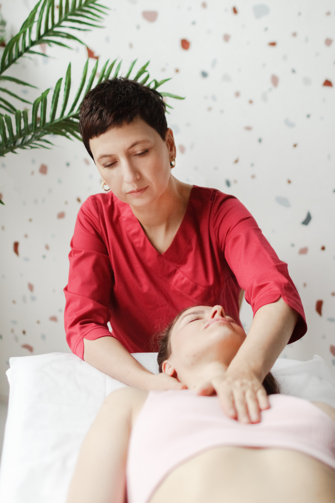
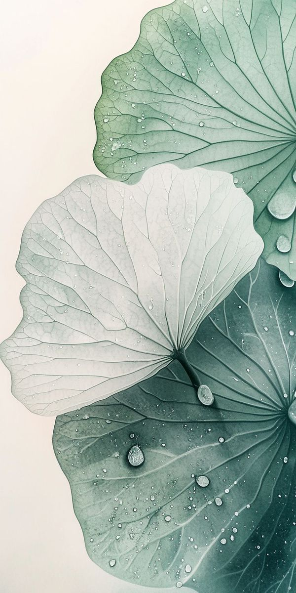
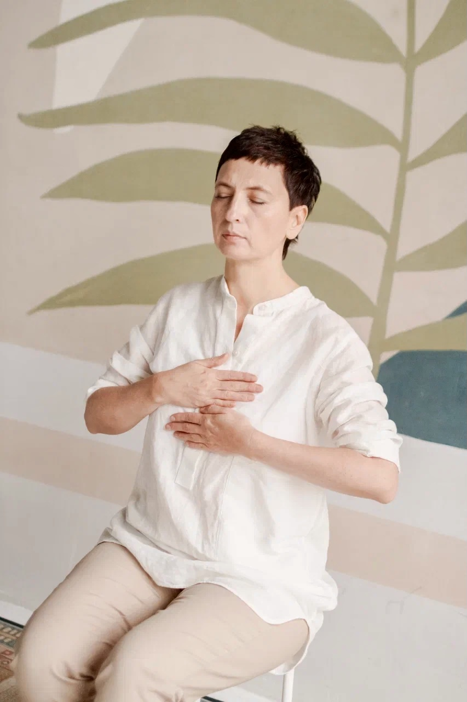
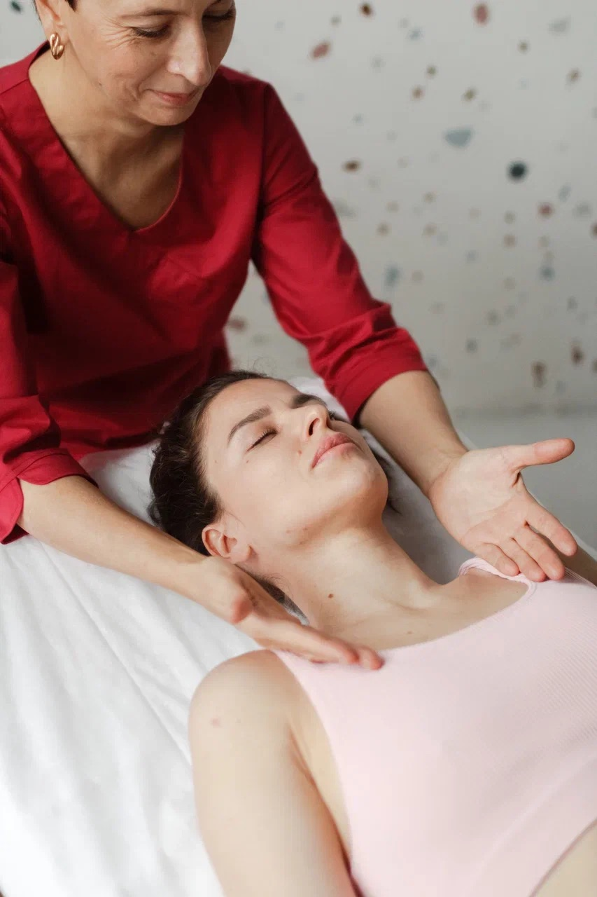

Тринадцать лет я провожу оздоровительные сеансы, чтобы вам стало легче жить вашу непростую жизнь. Перед сеансом мы говорим о том, что вас беспокоит.

Древние и современные методы, безопасные и мягкие. Очно в Анталье и Москве, онлайн для всего мира.
Открыть страницу 02Японское оздоровительное искусство для саморазвития, самопомощи и работы с другими людьми. Первая ступень, вторая и мастерская.
Открыть страницу 03Я создатель игры «Прикосновение Рэйки», веду «Активацию здоровья» и «Шахматы Мистиков». Современный способ разобрать любой жизненный затык.
Открыть страницу 04Курсы из трёх, пяти и десяти сеансов, групповые дистанционные сеансы, практикумы. Цены и описания на одной странице.
Открыть страницу
Вода не спорит. Она находит свой путь.
Если вы на грани, я рядом. Легко не будет.
Я работаю с людьми больше тринадцати лет и только делаю вид, что лечу коленки. По правде говоря, я работаю с теми, кто находится на грани.
Это не те, кто ищет обезболивание. Это те, кто больше не может жить по-старому и готов пройти через боль, страх и внутренние сломы к чему-то подлинному.
Я не даю готовых решений, гарантий и обещаний. Я сопровождаю в том, что действительно важно. Никакого спасательства и никакого давления.
Работаю с тем, что стоит за симптомом. Часто это связано с родом.

После второго сеанса прошли боли в суставах, которые досаждали почти год.Наталья, Москва, 47 лет

Анталья, Коньяалты, очно
Москва, очно, до 10 ноября
Онлайн, весь мир
Понедельник, среда, четверг, воскресенье
11:00, 12:30, 17:30 очно и онлайн
19:00 только онлайн